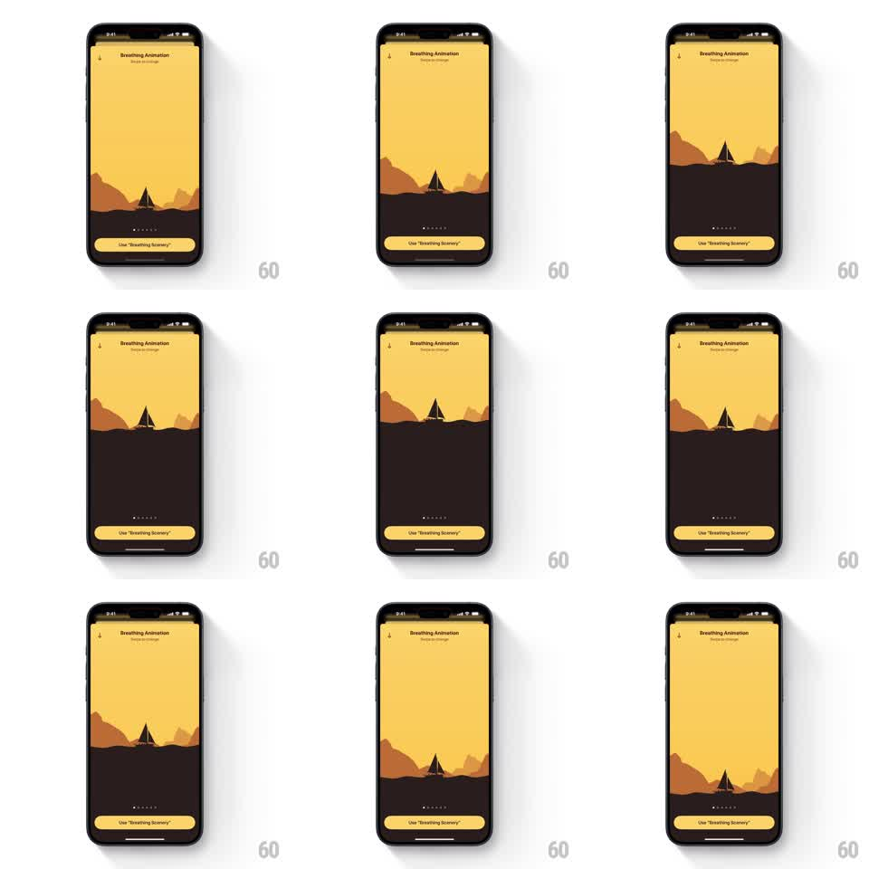

Media
Frame-by-frame

Rebuild this animation 1:1: Unwind's breathing scenery guide - the entire desert illustration itself breathes: the landscape drifts and swells, the sky darkens and lightens, to pace each breath.

Rebuild this animation 1:1: Unwind's breathing scenery guide - the entire desert illustration itself breathes: the landscape drifts and swells, the sky darkens and lightens, to pace each breath. ## Integration Integration: stack-agnostic spec - springs given as stiffness/damping, timed motions as duration + curve; map every value to your framework and animation library of choice. ## Scene Unwind's "Breathing Animation" screen: the warm yellow sky over dark dunes with a tent silhouette, page dots and a "Use 'Breathing Scenery'" button at the bottom. Here the scenery is the animation - no overlay shape. The dune layers rise and settle, the tent rocks gently, and the sky's brightness swells and dims with the breath. ## Motion spec Pattern: ambient scene breathing loop, ~8s per breath. - Inhale (~4s): the dune layers lift and expand slightly (translateY -6pt, scale 1.02, ease-in-out), front layers moving more than back ones for parallax; the sky lightens ~10%. - Hold (~1s): the scene rests at its most open, brightest state. - Exhale (~4s): the layers settle back down, the sky dimming toward its dusk tone. - The tent silhouette sways a degree or two through the cycle, the smallest motion in the scene. - Page dots and the button stay fixed; only the illustration breathes. ## Calibration - Motion is slow and low-amplitude - a landscape sighing, not bouncing. - Parallax between dune layers is what sells depth; every layer moves a different amount. ## Reduced motion The sky crossfades between its bright and dim states; the dunes stay still. ## Don't miss - There is no breathing shape at all - the environment itself is the guide. - The sky's brightness change is as important as the landscape motion.